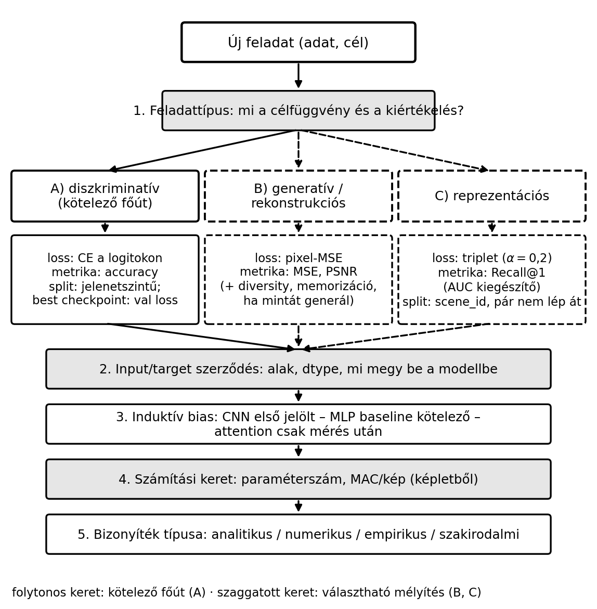
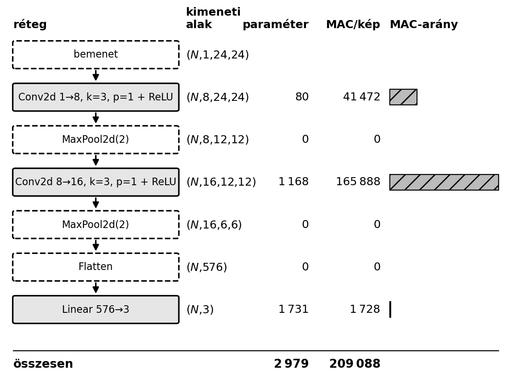

Ez a VIII. ellenőrző pont. A 20.4. V. ellenőrző pont: indokolt CNN-választás alfejezetben bevezetett architektúra-döntési dimenziók, a 28.4. VII. ellenőrző pont: CNN alkalmazási szerződés alfejezetben rögzített alkalmazási szerződés és — ha a mélyítést választotta — a 31.4. Generatív felhasználás és értékelés generatív értékelési kerete itt egyetlen, lektorálható modellválasztási döntési lapba áll össze. Nem új réteget vagy veszteséget vezetünk be: a feladat az, hogy egy új problémahelyzetre a tanult CNN-főútból indokolja a modellcsaládot, megadja az összes tenzoralakot, és minden állításhoz hozzárendelje a bizonyíték típusát.
Értékelés. A közös 0–4 rubrikát, a PASS-szabályt és
a hibatípusonkénti visszautakat az 1.4. Tanulási
diagnózis és kísérleti napló „Tanulási főút és ellenőrző pontok”
szakasza adja meg; a rubrika öt dimenziója (rubrikadimenziók, D1–D5): D1
matematikai helyesség, D2 kód és futtathatóság, D3 adat- és mérési
protokoll, D4 bizonyíték és nyomon követhetőség, D5 az állítás és
korlátai. A PASS feltétele ugyanott: (a) a labor minden
assert-je és toleranciaellenőrzése a saját futtatásban
átmegy, (b) mind az öt dimenzió legalább 3, (c) a riport csak
ténylegesen lefuttatott kód kimenetét közli. Itt csak az eltérés: a
riport modellválasztási döntési lap; a súlypont a D5.
A három visszahívás: 4 leckével korábban a 31.4. Generatív felhasználás és értékelés a likelihood, mintaminőség, diversity és memorizáció különválasztását adta; 16 leckével korábban a 28.4. VII. ellenőrző pont: CNN alkalmazási szerződés a cél, target, loss, output, metrika, split és inference szerződését; 48 leckével korábban a 20.4. V. ellenőrző pont: indokolt CNN-választás a classic/residual/efficient, scratch/transfer és budget döntéseket. Ebből a három szálból építjük fel az öt döntési dimenziót.
Induló kérdés: egy új feladat érkezik: 30 000 darab, pixeles, egycsatornás ipari felvételt kell osztályozni két felületi hiba szerint. Elegendő-e azt mondani, hogy „attentiont használunk, mert az a modern megoldás”? Becslés: nem. A modellválasztás öt, egymástól függetlenül ellenőrizhető kérdésből áll: mi a feladat típusa, mi az input/target szerződés, milyen reprezentációs induktív bias illik az adathoz, mekkora a számítási keret, és milyen bizonyíték támasztja alá az állítást. A 4. szakasz végén a nyitó feladatra kitöltött döntési lapban ezt a becslést tételesen igazoljuk.

Definíció szerint a három család célfüggvénye és kimeneti szerződése eltér.
Diszkriminatív modell. A modell a feltételes predikciót közelíti közvetlenül: vagy alakban. A target egy osztálycímke vagy folytonos regressziós cél, a loss pedig a predikció és a target közötti diszkriminatív veszteség: cross-entropy, BCE, MSE regresszió. Tipikus CNN-feladatok: osztályozás, detektálás, szegmentálás.
Generatív modell. A modell az input eloszlás vagy az együttes modelljét tanulja, és új realizációt tud előállítani. A szűkebb rekonstrukciós célú denoising háló a feltételes modellt tanulja, ahol maga a tiszta jel; a generatív értékelésnél a 31.4. Generatív felhasználás és értékelés szerint a likelihood, mintaminőség és diversity külön mérendő.
Reprezentációs modell. A modell beágyazást ad, ahol a feladat hasonlósági szerkezete egy távolságban (koszinusz vagy ) fejeződik ki. A loss nem közvetlen osztálycímkére, hanem párokra vagy tripletekre épül: contrastive, triplet. A downstream osztályozó vagy retrieval csak a beágyazáson értékelődik.
A határ nem éles: egy denoising CNN felfogható regressziós diszkriminatív modellként is. A besorolást a célfüggvény és a kiértékelési terv dönti el, nem a rétegtípus.
MSELoss mean redukciója
ad). A
alak ehelyett a mintánkénti átlagos SSE-t adná, ami ennek
-szerese;
a két skála nem keverhető.A batch átlaga az alapértelmezett reduction; a sum-reductiont külön jelöljük.
A CNN lokális recepciós mezőkkel, súlymegosztással és eltolási equivarianciával dolgozik (13.2. Konvolúció és cross-correlation, 16.1. Eltolási equivariance és invariance); akkor előnyös, ha a feladatban a lokális mintázatok eltolás-invariánsan ismétlődnek. Az MLP globálisan köt össze minden pixelt, de nem kap beépített térszerkezetet; kis felbontáson és kevés adaton baseline-nak alkalmas. Az attention-család [P21] globális kölcsönhatást tanul, de a pozícióinformáció kódolástól függ; a Vision Transformer [P22] ezt képi tokenekre alkalmazza. Ennek részletes összevetése a fejezet 32.1. Szekvenciamodell és változó hossz–32.3. Vision Transformer és hibrid felhasználás mélyítéséhez tartozik, és a főúti checkpointnak nem előfeltétele. A generatív CNN encoder–decoder szerkezetet és gyakran skip-kapcsolatot használ a finom térbeli részletek visszaadására.
Konvolúciós réteg paraméterszáma ; a MAC-ek száma batchenként ( kép)
képenként ennek -ed része: . Affin réteg paraméterszáma ; MAC-ek száma batchenként , képenként . A főúti labor kis CPU-s keretben marad; GPU, AMP és külső súly külön jelölt mélyítés.
Az 1.2. Szakmailag megalapozott modellezési állítások és 8.4. II. ellenőrző pont: korrekt tanulási állítás szerint minden állításhoz meg kell nevezni az ellenőrzés típusát: analitikus (alak- vagy paraméterszám-levezetés), numerikus (gradiensellenőrzés), empirikus (futtatott protokoll nyers eredménnyel), vagy szakirodalmi (olvasott forrásszakasz, attribúcióval). A „modern, mert attention” kijelentés egyikbe sem tartozik.
A kötelező elem nem új tétel bizonyítása, hanem a tanult állítástípusok alkalmazása egy konkrét CNN-feladatra. Tekintsük a következő három állítást.
(A1) „A GlyphNetMini a függelék A. A GlyphLab adatkészlet szakaszában leírt GlyphLab teszthalmazon feletti accuracy-t ér el, ha a legjobb val_loss checkpointot értékeljük.”
Osztályozás. Empirikus állítás. Sem az architektúrából, sem a loss definíciójából nem következik; futtatás szükséges.
Feltételek. Adat: GlyphLab 1.0 (generátorverzió
1.0), generátorseed 20261020, 180 jelenet, jelenetenként két nézet,
összesen 360 kép; a jelenet-szintű split 120/30/30, azaz 240/60/60 kép.
Modell: GlyphNetMini, 2979 tanulható paraméter. Tanítás: Adam,
,
batch 32, 30 epoch, CE loss, seed 20261020, float32 CPU. Választás: a
legjobb checkpoint kizárólag val_loss alapján; a test csak a választás
után kerülhet be. Kiértékelés: model.eval(),
torch.no_grad(), int64 target.
Bizonytalanság. Egyetlen seed bitpontos eredménye nem viseli a seed-szórást; a megalapozott állításhoz 3–5 seed és azok szórása kell. A keret 36.2. Ismétlések és eredménybizonytalanság ismétlési protokollját követjük. A teszt 60 képből áll, de csak 30 független jelenetből, ezért a képenkénti accuracy felbontása , a független egység pedig a jelenet; a -es küszöb teljesülését jelenetszintű bontással és bizonytalansági intervallummal együtt kell jelenteni, önmagában a „ felett” nem elég.
(A2) „A GlyphNetMini kimeneti alakja logits a bemenetre.”
Osztályozás. Levezetés. Ellenőrizhető analitikusan, futás nélkül. A rétegsor:
Az alakellenőrzés a 14.2. Több bemeneti és kimeneti csatorna és 14.1. Stride, padding, dilation és kimeneti méret képleteinek közvetlen alkalmazása.
(A3) „A modell 2979 tanulható paramétert tartalmaz.”
Osztályozás. Levezetés. Számítás:
Ez az elemzés mutatja, hogy a három állítás két eltérő bizonyítéktípust igényel: A1 futtatást, A2 és A3 levezetést. A döntési lapon minden állításhoz külön sorban rögzítjük a típust és a feltételek teljesülését.
A labor három helyzetet kér. Az A a kötelező főút, a B és C választható mélyítésből is származtatható, de egyik sem előfeltétele a checkoutnak.

F.normalize); így
,
a loss négyzetes
-távolsága
és a metrika koszinusz-távolsága monoton kapcsolatban van, ezért a
Recall@1 rangsora mindkettővel azonos.A nyitó kérdés öt döntési szempontja (S1–S5) tételesen kitöltve (a döntés a bemeneti szerződésből és a tervezett bizonyításból következik, nem a rétegdivatból):
| Döntési szempont | Döntés a nyitó feladatra | Rubrikadimenzió (D1–D5) |
|---|---|---|
| S1 Feladattípus | diszkriminatív osztályozás, felületi hibaosztály; a target int64 címke, a loss CE a logitokon | D1, D2: szerződés- és loss-definíció |
| S2 Input/target | float32, ; int64; output ; maszk és doboz nem megy be | D2: alak- és dtype-szerződés |
| S3 Induktív bias | a felületi hiba lokális textúra, ezért kis CNN (lokális recepciós mező, súlymegosztás) az első jelölt; MLP baseline kötelező; attention csak mérés után, nem a priori | D4: analitikus érvelés, majd empirikus összevetés |
| S4 Számítási keret | paraméter- és MAC-képlet a 2. szakaszból; induló modell néhány ezer és néhány tízezer paraméter között, CPU-n mérve | D2: analitikus költségbecslés |
| S5 Bizonyíték | alak- és paraméterszám-állítás levezetés; accuracy-állítás több seeddel, egyszeri teszten, jelenetszintű bontással | D4, D5: a bizonyíték típusa és a következtetés korlátja |
A táblázat a döntési lap minimális váza; a labor A/B/C lapja ezt tölti ki konkrét alakokkal, loss-értékekkel és futtatási eredménnyel. A „modern, mert attention” válasz egyik bizonyítéktípusba sem sorolható, ezért a lapon kitöltetlen maradna.
Előfeltételek. Python 3.12, CPU; a lab/
munkakönyvtárban uv sync-kel telepített környezet (a
uv.lock szerint NumPy 2.3.5, pandas 2.3.3, PyTorch
2.14.1+cpu; a közölt mért kimenetek a könyv ellenőrző környezetéből,
Python 3.12.3, NumPy 2.5.4, PyTorch 2.15.0+cpu alatt készültek, eltérés
esetén legfeljebb az utolsó jegyekben); a laborban használt
GlyphLab-fájlok a data/ alatt (images.npy,
masks.npy, metadata.csv közül a szükségesek);
a futásidőt a futtatás során mért értékként kell rögzíteni.
A labor átadandó eredménye: a fenti három specifikációt kitöltő
döntési lap, valamint az A modell egy ténylegesen
futtatott kontrollja. Az adatfájlok a függelék A. A
GlyphLab adatkészlet szerződését követik:
data/images.npy
float32, data/labels.npy
int64, data/metadata.csv az
index, scene_id, view_id, label, split, xmin, ymin, xmax, ymax
oszlopokkal; a generátor lab/generate_data.py, seed
20261020. A n128_control.py a lab/ könyvtárban
van, az adatok a data/ alatt; a Path(__file__)
alapú feloldás miatt a munkakönyvtártól függetlenül ugyanazokat a
fájlokat találja. A kód teljes; a könyv írási környezetében futtatva az
alábbi mért kimenetet adta.
from pathlib import Path
import numpy as np
import torch
import torch.nn as nn
seed = 20261020
torch.manual_seed(seed)
np.random.seed(seed)
dtype = torch.float32
device = "cpu"
# GlyphLab adat betöltése; az útvonal a szkript könyvtárához igazodik (lab/n128_control.py)
LAB = Path(__file__).resolve().parent
DATA = LAB / "data"
images = np.load(DATA / "images.npy") # (360,1,24,24) float32
labels = np.load(DATA / "labels.npy") # (360,) int64
metadata = np.genfromtxt(
DATA / "metadata.csv", delimiter=",", names=True,
dtype=None, encoding="utf-8"
)
# A sor szerinti képindexelés csak akkor helyes, ha a metadata index-oszlopa 0..N-1.
assert np.array_equal(metadata["index"].astype(np.int64), np.arange(len(metadata))), \
"a metadata indexe nem a képtömb sorindexe"
assert (metadata["label"].astype(np.int64) == labels).all(), \
"a metadata label oszlopa nem egyezik a labels.npy-szel"
train_mask = metadata["split"] == "train"
X_train = torch.tensor(images[train_mask], dtype=dtype, device=device)
y_train = torch.tensor(labels[train_mask], dtype=torch.int64, device=device)
assert X_train.shape == (240, 1, 24, 24), X_train.shape
assert y_train.shape == (240,), y_train.shape
print("X_train shape:", X_train.shape) # mért: (240, 1, 24, 24)
print("y_train shape:", y_train.shape) # mért: (240,)
class GlyphNetMini(nn.Module):
def __init__(self, num_classes=3):
super().__init__()
self.features = nn.Sequential(
nn.Conv2d(1, 8, kernel_size=3, padding=1),
nn.ReLU(),
nn.MaxPool2d(2),
nn.Conv2d(8, 16, kernel_size=3, padding=1),
nn.ReLU(),
nn.MaxPool2d(2),
)
self.head = nn.Linear(16 * 6 * 6, num_classes)
def forward(self, x):
z = self.features(x)
z = z.reshape(z.size(0), -1)
return self.head(z)
model = GlyphNetMini().to(device=device, dtype=dtype)
n_params = sum(p.numel() for p in model.parameters())
assert n_params == 2979, n_params
print("parameter count:", n_params) # mért: 2979
# Forward kontroll eval modban
model.eval()
with torch.no_grad():
logits = model(X_train[:4])
assert logits.shape == (4, 3), logits.shape
print("logits shape:", logits.shape) # mért: (4, 3)
# Backward kontroll kis batchen
model.train()
X_batch = X_train[:2].clone().requires_grad_(True)
logits = model(X_batch)
loss = nn.functional.cross_entropy(logits, y_train[:2])
loss.backward()
assert torch.isfinite(loss) and loss.item() > 0
assert X_batch.grad.shape == (2, 1, 24, 24), X_batch.grad.shape
print("loss:", loss.item()) # mért: 1.069029688835144
print("dL/dX shape:", X_batch.grad.shape) # mért: (2, 1, 24, 24)
print("dL/dX max abs:", X_batch.grad.abs().max().item())Mért kimenet (Python 3.12.3, torch 2.15.0+cpu, CPU, 10 szál, seed 20261020):
X_train shape: torch.Size([240, 1, 24, 24])
y_train shape: torch.Size([240])
parameter count: 2979
logits shape: torch.Size([4, 3])
loss: 1.069029688835144
dL/dX shape: torch.Size([2, 1, 24, 24])
dL/dX max abs: 0.011990300379693508Futtatási parancs a lab/ könyvtárból:
python n128_control.py; a szkript a
Path(__file__) alapján oldja fel a data/
útvonalat, ezért más munkakönyvtárból is ugyanazokat a fájlokat találja.
Ellenőrzések: logits.shape == (4,3),
X_batch.grad.shape == (2,1,24,24),
n_params == 2979, a loss véges és pozitív, a metadata
index oszlopa a tömb sorindexe, label oszlopa
pedig egyezik a labels.npy-szel; ezeket a kód
assert-jei ellenőrzik. A fenti loss-érték a rögzített seed
és a megadott környezet mellett mért érték; a jegyzőkönyvbe a hallgató
saját futtatásának nyers kimenete kerül. Shape-eltérésnél a modell
definíciója hibás; n_params != 2979 esetén a rétegsor eltér
a specifikációtól.
Előfeltétel: 28.4. VII. ellenőrző pont: CNN alkalmazási szerződés, 31.4. Generatív felhasználás és értékelés. Sorolja be az A, B, C laborfeladatot diszkriminatív, generatív, illetve reprezentációs családba. Mindegyiknél egy mondatban nevezze meg, hogy a target és a loss melyik definíciót kényszeríti ki. Átadandó: a három besorolás indoklással.
Előfeltétel: 14.1. Stride, padding, dilation és kimeneti méret, 14.2. Több bemeneti és kimeneti csatorna. Vezesse le a GlyphNetMini kimeneti alakját és paraméterszámát a 3. szakasz rétegsorára. Mutassa meg, hogy a Linear bemenete miért , és adja meg a paraméterszámot bias nélkül is. Átadandó: a lépésenkénti levezetés, a biasos és bias nélküli összeg, valamint annak ellenőrzése, hogy a biasok összege 27.
Előfeltétel: 11.1. Tensor és autograd-életciklus, 11.2. nn.Module és paraméterregisztráció. Írjon teljes Python-kódot, amely létrehozza a GlyphNetMini modellt, betölti a GlyphLab train batch-ét, elvégzi a forwardot és egy backwardot, majd kiírja az összes shape-et, a paraméterszámot és a loss értékét. A kódnak tartalmaznia kell a seed, dtype és device rögzítését. Átadandó: futtatható kód és a tényleges futtatás jegyzőkönyve.
Előfeltétel: 7.2. Softmax és többosztályos cross-entropy, 7.4. Numerikus stabilitás és jelentésmegőrző implementáció. A következő részlet hibás:
out = model(x) # logits, shape (N,3)
out = torch.softmax(out, dim=1)
loss = nn.CrossEntropyLoss()(out, y)Mi a hiba, mi a numerikus következménye, hogyan javítja, és milyen kis logit-értékkel ellenőrzi a javítást? Átadandó: az ok, a következmény, a javított kód, és a kontrollérték a javított lossra.
Előfeltétel: 20.4. V. ellenőrző pont: indokolt CNN-választás, 28.4. VII. ellenőrző pont: CNN alkalmazási szerződés, 36.2. Ismétlések és eredménybizonytalanság. Tervezzen kísérletet, amely a GlyphLab adaton a GlyphNetMini-t egy azonos nagyságrendű paraméterszámú MLP baseline-nal hasonlítja össze. Határozza meg a baseline szerkezetét úgy, hogy a paraméterszám 3000 alatt maradjon, és adja meg a teljes protokollt: split, seedek, választási szabály, metrika, párosítás, korlát. Átadandó: a terv, valamint annak kimondása, hogy a következtetés csak a GlyphLab adatra vonatkozik.
A protokoll rögzítse a hipotézist, a változó tényezőt, a kontrollt, a metrika mértékegységét, a seedeket, az erőforrásigényt és a számokkal megadott döntési szabályt; ha a terv tanítást is tartalmaz, az architektúrát, az optimizert, a tanulási rátát és az epochszámot is.
A: diszkriminatív, mert a target osztályindex , a loss cross-entropy a logitokon. B: generatív/rekonstrukciós, mert a target maga a tiszta kép, a loss MSE a pixelrekonstrukció; a modell nem osztályoz, hanem jel-térbe képez. C: reprezentációs, mert a target triplet szerkezet, a loss a beágyazott távolságok kontrasztív rendezése; nincs közvetlen osztálycímke a veszteségben. Ellenpélda a határokra: ha B-t csak denoisingra használjuk és nem mintát generálunk, akkor a generatív címke a célból, nem a rétegtípusból következik.
A rétegsor: Conv(3,pad=1) MaxPool(2) Conv(3,pad=1) MaxPool(2) . A csatornák . A Flatten elemet ad. Paraméterek: Conv1 súly + bias ; Conv2 súly + bias ; Linear súly + bias . Összesen . Bias nélkül . Biasok összege . Alakellenőrzés: a Flatten hossza megegyezik a Linear súlymátrix oszlopszámával.
Az 5. szakasz kódja a kért elemeket már tartalmazza: a seed, dtype és
device rögzítését, a betöltést, a forwardot és backwardot, valamint a
paraméterszám és a gradiens-shape kiírását/ellenőrzését. A hallgatói
változatnak ezt kell adaptálnia; a paraméterszám-kiírást nem kell
hozzáadnia, mert az az n_params sorral már megvan. A
minimális elvárt kimenet: X_train.shape (240,1,24,24),
parameter count 2979, logits shape (4,3),
dL/dX shape (2,1,24,24), a loss véges. Shape-ellenőrzés
szigorú egyezést kér; a loss értéknél nincs előre rögzített tolerancia,
csak a végesség és pozitivitás.
A nn.CrossEntropyLoss PyTorchban a
logitsot várja, és maga alkalmazza a log-softmaxot. A
kétszeres softmax után a loss
lesz a helyes
helyett. Következmény: a loss más skálán mozog, a gradiens a hibás
összetett leképezésből származik, és a kimenet numerikusan ellaposodik.
Javítás: a torch.softmax sor elhagyása. Kontroll:
,
.
A helyes loss
F.cross_entropy(torch.tensor([[2.,1.,0.]]), torch.tensor([0]))
értéke
;
a hibás változat
(a projekt venvjében, PyTorch 2.15.0+cpu alatt futtatva: 0,4076 és
0,7972). A hallgató futtassa mindkettőt, és rögzítse a két számot.
Baseline MLP: bemenet
,
egy rejtett réteg 5 neuronnal, ReLU aktivációval, kimenet 3.
Paraméterszám:
,
tehát a GlyphNetMini 2979 paraméteréhez mérhető. Protokoll: GlyphLab
1.0, jelenet-szintű train/val/test 120/30/30; mindkét modell ugyanazon 5
seeddel (pl. 20261020, 20261021, 20261022, 20261023, 20261024) tanul 30
epochig, batch 32, Adam
;
a legjobb checkpoint val_loss szerint; a test accuracy seedenként
párosítva kerül feljegyzésre. Metrika: test accuracy seedenként; a
modellek közti különbségre a jelenetszintű páros bootstrap 95%-os CI-je
(,
a 30 test-scene_id visszatevéses újramintavétele, mindkét
modell ugyanazokon a jeleneteken; seed
),
a seed-szórást külön jelentve. Döntési szabály: a CNN-t akkor tekintjük
jobbnak, ha a CI alsó határa 0 felett van; különben nem állítunk
különbséget. A párosítás az azonos adat- és seedlistára vonatkozik; az
inicializáció nem bitre azonos, mert a két architektúra RNG-fogyasztása
eltér, ezért a seedek közötti párosítás statisztikai, nem azonos
kezdősúlyokat jelent. Következtetési határ: az eredmény kizárólag a
GlyphLab kis, szintetikus adatára és a rögzített CPU-keretre vonatkozik;
nem általános természetesképi vagy termelési állítás. A kísérlet nem
lett lefuttatva; a terv a futtatás előtti protokoll, a nyers eredményt a
hallgató a saját jegyzőkönyvében rögzíti.
A leggyakoribb tévedés: a bővítő generatív vagy transformer labor elvégzése automatikusan kiváltja a főúti checkpoint CNN-kontrollját. Ez hamis. Ellenpélda: X hallgató csak egy attention-alapú osztályozót ad be a GlyphLab adatra, és a döntési lapon az A modell állításait nem osztályozza, a CNN forward/backward kontrollt nem futtatja. Y hallgató a 3. szakasz három állítását osztályozta, a GlyphNetMini kontrollt lefuttatta, és a B/C specifikációt mélyítésként, külön jelölve csatolta. A checkpoint követelményét Y teljesíti, X nem, hiába lehet az attention-modell érdekesebb kutatási irány. Ugyanígy: a denoising CNN generatív labja nem helyettesíti a diszkriminatív A cél–target–loss szerződésének ellenőrzését, mert a két feladat más targetet és más metrikát használ.
Mielőtt a döntési lapot lezárom, öt kérdést ellenőrzök. (1) Minden állítás mellett szerepel a bizonyíték típusa — analitikus, numerikus, empirikus vagy szakirodalmi? (2) A loss bemenete logits, a target int64, és softmax nincs a modellben? (3) A split a jelenet-szintű függetlenséget tartja, a triplet/denoising párok nem lépnek át spliteken? (4) A legjobb checkpoint kiválasztása kizárólag val_loss alapján történt, a test csak utána jött? (5) A közölt kód ténylegesen futott-e, és a kimenet mért érték-e, vagy a „VÁRT ÉRTÉK (levezetésből, nem mért)” címkét viseli-e? Ezt a jegyzőkönyvben mindig explicit jelölni kell.
Válaszkulcs. (1) Igen, minden állítás mellett szerepel a bizonyíték típusa. (2) Igen, a loss logitsot kap, a target int64, softmax nincs a modellben. (3) Igen, a split jelenet-szintű, a párok nem lépnek át spliteken. (4) Igen, a checkpointot kizárólag a validációs loss választja, a test csak utána jön. (5) Igen, a kód futott, és a kimenet vagy mért érték, vagy „VÁRT ÉRTÉK” címkével szerepel.
Visszahívás: a 16.4. IV. ellenőrző pont: a CNN-operátor teljes megértése CNN-operátor cross-correlationt számol, NCHW bemenettel és OIHW-szerű súlyalakkal; az itt használt Conv2d paraméterszám-képlet ebből következik. A 20.4. V. ellenőrző pont: indokolt CNN-választás három döntési dimenziója itt bővül a feladattípus és a bizonyíték dimenziójával. A 28.4. VII. ellenőrző pont: CNN alkalmazási szerződés szerződésláncának minden eleme a döntési lap külön sora.
A célhoz illő neurális modell választása nem ízlés, hanem öt döntési szempont (S1–S5) együttes ellenőrzése: feladattípus (diszkriminatív, generatív, reprezentációs), input/target szerződés, reprezentációs induktív bias, számítási keret és bizonyíték típusa. Egy CNN-állítás lehet empirikus, levezethető vagy szakirodalmi; az állítás csak a feltételeivel együtt értékelhető. A labor három GlyphLab-helyzethez ad specifikációt, és a főúti GlyphNetMini forward/backward kontrollját kéri. A generatív vagy transformer mélyítés hasznos, de nem helyettesíti a CNN-főút ellenőrzését. A lektorálható döntési lap minden állításhoz feltételt, alakot, splitet és ellenőrzési típust rendel.
A 33.1. Inference-szerződés és modellcsomag inference-szerződésre és modellcsomagra lép. Az itt rögzített input/output alak, dtype, eszköz és kiértékelési mód közvetlenül az exportálandó modell szerződésének bemenete lesz: ugyanaz a GlyphNetMini, amely itt a döntési lapon szerepel, ott előre definiált batch- és kimeneti szerződéssel válik csomaggá.